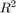
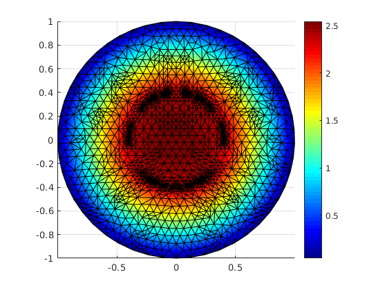
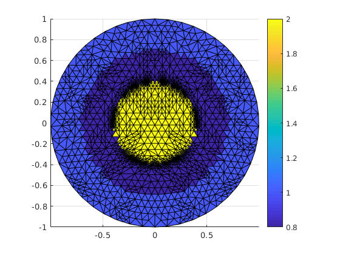

A boundary value problem in  with non-constant coefficnets
The problem is solved by using adaptive mesh refinement.
function run_ellipticAdaptive()
Call constructor
pde = EllipticAdaptive() ;
Define the grid, here a unit circle with meshwidth h = 0.125
pde.grid = UnitCircle(0.125);
Use P1 elements
pde.fem = Lagrange12D();
Assign/define coefficient functions. For a and f we use anonymous functions.
pde.c = @c;
pde.a = @(x,y) 0.0;
pde.f = @(x,y) 10.0;
Simulate stiff-spring technique to approxiamte Homogeneous Dirichlet BCs.
pde.setBoundaryConditions('Robin',{'100' '0'});
Initialize the problem, here without any parameters.
pde.initialize() ;
Set maximum number of refinements
pde.solverOptions.maxit = 5;
Call de apative solver. Note that solver is part of EllipticAdaptive class.
pde.solveAdaptive(1e-3);
Re-order matrix using reverse Cuthill-McKee reordering ... done. Solve using mldivide ... done. Spend 0.000817 seconds for solving pde problem. Solve on adaptive refined mesh with 333 nodes. Re-order matrix using reverse Cuthill-McKee reordering ... done. Solve using mldivide ... done. Spend 0.000887 seconds for solving pde problem. Solve on adaptive refined mesh with 554 nodes. Re-order matrix using reverse Cuthill-McKee reordering ... done. Solve using mldivide ... done. Spend 0.001576 seconds for solving pde problem. Solve on adaptive refined mesh with 830 nodes. Re-order matrix using reverse Cuthill-McKee reordering ... done. Solve using mldivide ... done. Spend 0.001609 seconds for solving pde problem. Solve on adaptive refined mesh with 1275 nodes. Re-order matrix using reverse Cuthill-McKee reordering ... done. Solve using mldivide ... done. Spend 0.002485 seconds for solving pde problem. Solve on adaptive refined mesh with 1983 nodes. Re-order matrix using reverse Cuthill-McKee reordering ... done. Solve using mldivide ... done. Spend 0.003912 seconds for solving pde problem.
Plot solution
figure(1);
pde.grid.plot(pde.y,'LineStyle','-'); view(2),drawnow
 Plot coefficent function
figure(2)
mp = pde.grid.midpts;
xm = mp(1,:);
ym = mp(2,:);
pde.grid.plot(pde.c(xm,ym),'LineStyle','-'); view(2),drawnow
 end
Define coefficent function c
function val = c(x,y) val = 1*ones(size(x)); val(sqrt(x.^2+y.^2)<0.7) = .80; val(sqrt(x.^2+y.^2)<0.4) = 2; end